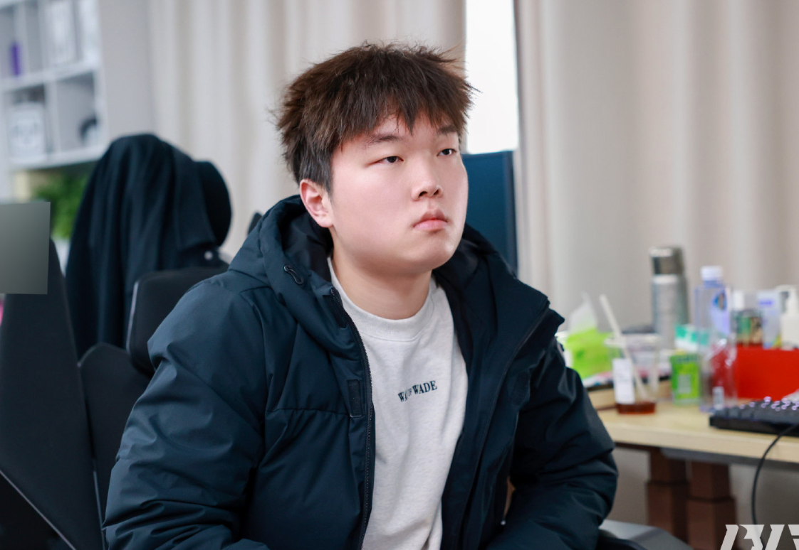
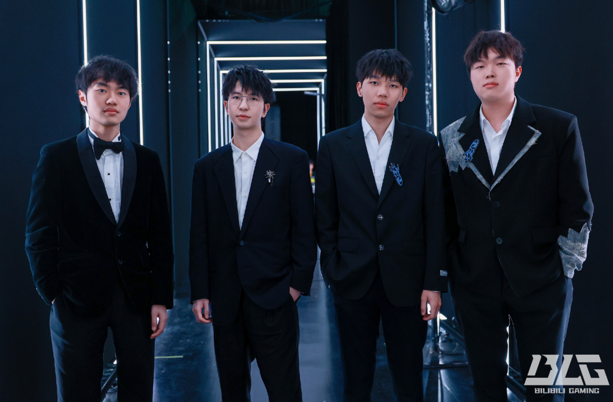

Hé lộ lịch tập "địa ngục", siêu sao BLG "gáy khét" sẽ ôm trọn danh hiệu LPL lẫn MSI
Quyết tâm trở lại của tập thể BLG dường như là cực kỳ lớn sau một giai đoạn đầu mùa thất bại.
Siêu sao BLG "gáy khét" với lịch tập "địa ngục"
Mặc dù không có nhiều sự thay đổi nhân sự nhưng BLG vẫn là một đội tuyển được kỳ vọng lớn tại khu vực LPL. Tuy nhiên, BLG lại có một khởi đầu vô cùng tệ ở mùa giải 2025 khi thất bại toàn diện ở Split 1. Theo đó, họ đã thất bại trong việc có được ngôi đầu bảng đấu khi thua TT, thậm chí khi vào vòng playoffs thì BLG cũng chỉ có được vị trí thứ 4. Có lẽ vì nhận được quá nhiều sự kỳ vọng như vậy nên khi thất bại trước TES thì tập thể BLG tỏ ra cực kỳ thất vọng còn người hâm mộ thì không tiếc lời chỉ trích đội tuyển này.
Với một đội tuyển sở hữu nhiều ngôi sao cùng tham vọng lớn thì kết quả thất vọng kể trên là khó lòng "nuốt trôi" với BLG. Vì vậy, họ đã lên một kế hoạch dài hơi để lấy lại vinh quang tại LPL và xa hơn là cạnh tranh tại MSI 2025 sắp tới. Cụ thể, Xạ thủ ngôi sao của BLG - Elk trong một buổi stream gần đây đã tiết lộ rằng họ đang có lịch tập rất nặng cả thể chất lẫn kỹ năng trong game để sẵn sàng giành danh hiệu.
"Các bạn yên tâm là những màn trình diễn thất vọng ở Split 1 sẽ không lặp lại đâu. Chúng tôi đang tuân thủ nghiêm ngặt lịch tập mới với 15 trận đấu xếp hạng mỗi ngày. Nếu mà có đấu tập thì giảm còn 7 trận nhưng thời gian tập luyện vẫn được giữ nguyên. Ngoài ra, toàn đội cũng phải dành ra 2 tiếng tập gym mỗi ngày để nâng cao thể chất. Cả đội đang tập luyện rất nghiêm túc để vô địch LPL và xa hơn là MSI" - Elk chia sẻ trên sóng trực tiếp.
BLG cần sớm trở lại để "giải cứu" LPL
Sau giải đấu First Stand 2025, TES đang là đội tuyển nhận rất nhiều chỉ trích khi có màn trình diễn bạc nhược và bị loại một cách quá dễ dàng. Kết hợp với những kết quả tệ hại tại các giải đấu quốc tế trước đó thì niềm tin của người hâm mộ LPL với TES có lẽ đã ở mức "chạm đáy". Rõ ràng là khu vực này cần có một cái tên mới để đặt hy vọng và BLG dường như là đội tuyển được tin tưởng nhất lúc này.
Tuy nhiên, BLG cần nhanh chóng lấy lại phong độ cao để đáp ứng điều đó sau giai đoạn Split 1 gây thất vọng. Đặc biệt là vị trí của Bin khi anh chàng này cần phát triển bản thân nhanh hơn, thoát khỏi hình ảnh một người chơi chỉ giỏi đi đường. Hy vọng rằng lịch tập luyện "địa ngục" kể trên sẽ giúp BLG mạnh mẽ hơn, "mở khóa" nhiều sức mạnh mới để giúp LPL trở lại và cạnh tranh sòng phẳng với các đại diện LCK.